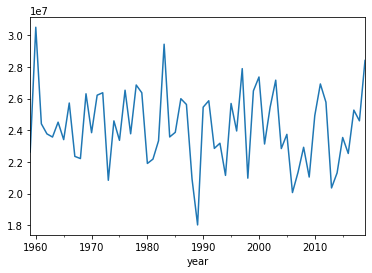
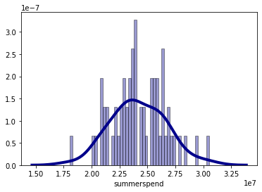
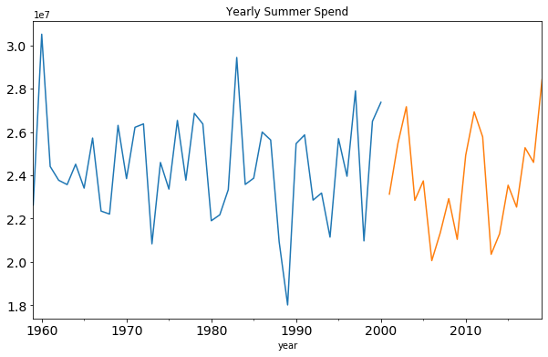
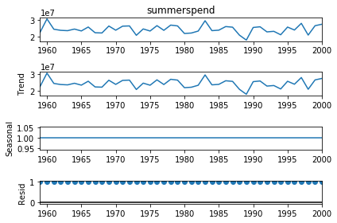
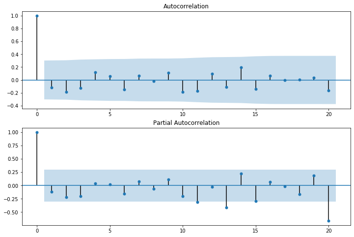
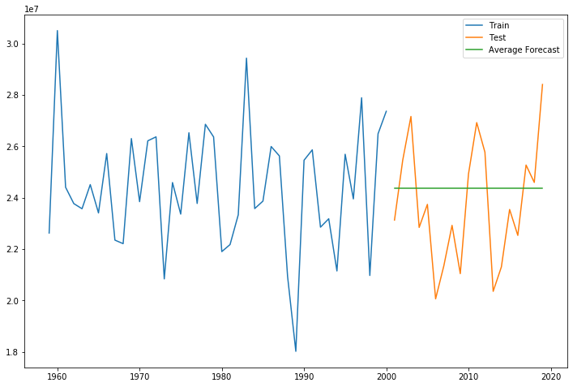
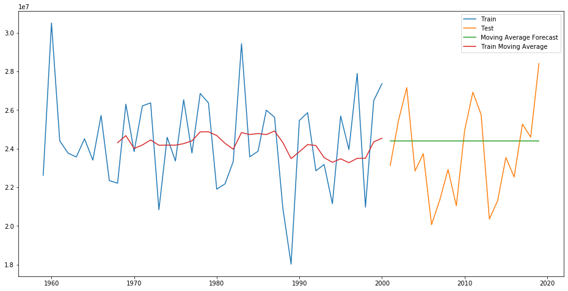
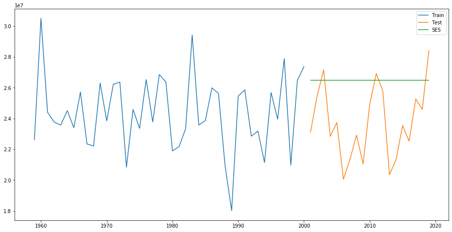
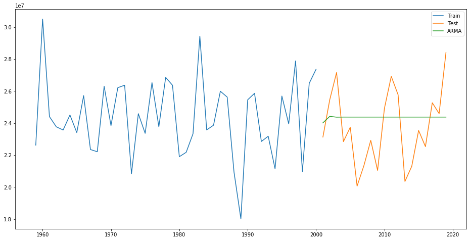
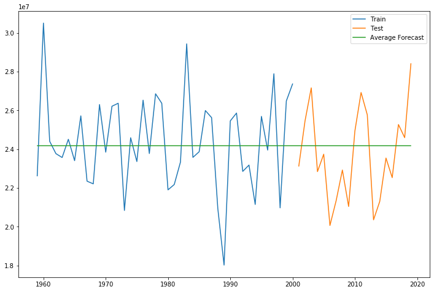

This post describes 5 forecasting models and I apply them to predict the total summer spend for leisure in NYC
Last semester, in my Marketing Analytics class, I have been working with Time Series Data. This data records total summer spending in NYC from 1959 to 2019. There is no trend, and no seasonality in this data. Very simple but I still wanted to review what a Time series is as well as make my understanding more concert on that. This article only provides some simple time series models. What I am trying to say is that time series predictions are difficult in reality and always require a very specialized data scientist to implement it. The models in this post are so limited that we should learn more beyond these.
How the time series looks like?
The data contains only 2 columns, one column is Date and the other column relates to total summer spending.
| year | summerspend |
|---|---|
| 1959 | 22627333.2 |
| 1960 | 30509799.9 |
| 1961 | 24408277.9 |
| 1962 | 23772213.4 |
| 1963 | 23572771.3 |
It shows the summer spending on New England parks by greater NYC visitors to New England parks from 1959 till 2019. The goal is to predict the total spending for each of the next five years.
Time Series Analysis
Step 1: Visualizing the time series
1 | data['summerspend'].plot(); |

When we work on time series forecasting, a series need to be stationary. Stationary process has the property that the mean, variance and autocorrelation structure do not change over time. The mean is constant in this case. However, it is hard to say stable variance and autocorrelation. Before ARMA model, I will try to detect this.
We also visualize the data in our series through a distribution too.
1 | sns.distplot(data['summerspend'], hist=True, kde=True, |

We can observe a near-normal distribution over consumption values.
Step 2: Creating Training and Test Datasets for Modeling
Because we need to capture the time factor in time series data, I devided total data as training data and test data by time. The first 70% older data is training data, and 30% newer data is test data.

We divided data into training data and test data by time. As we can see in the this graph, blue old data is used to build models and orange new data is used for prediction.
Step 3: Exploring Time Series to Select Proper Models
A given time series is thought to consist of three systematic components including level, trend, seasonality, and one non-systematic component called noise.
In order to select a proper time series model, we should do ETS decomposition. That is extract trend and seasonality from our data. The resultant series will become stationary through this process.
1 | from statsmodels.tsa.seasonal import seasonal_decompose |

According to the ETS decomposition, there is no significant seasonal and trend. Therefore, we will not consider the seasonal model, such as SARIMAX, Holt-Winters, Holt’s Linear Trend.
1 | from statsmodels.graphics.tsaplots import plot_acf |

What’s more, this time series seems to be stationary. Both ACF and PACF fall into confidence interval abruptly, cutting off at q = 0 and p = 0,respectively. But for more precisely prediction, we will try AR(1), MA(1), ARMA(1,1) in the following modeling process
Step 4: Modeling
We use training dataset for modeling, and test dataset to measure the performance of models. The performance indicator mainly is RMSE. But we also use AIC and BIC to measure the performances of AR(1), MA(1), ARMA(1,1) , to select the best model in ARMA.
Method 1: Naive Approach
Consider the process is no trend and no seasonal factor, we apply the Naive Approach at first.
We can infer from the graph that the price of the coin is stable from the start. Many a times we are provided with a dataset, which is stable throughout it’s time period. If we want to forecast the price for the next day, we can simply take the last day value and estimate the same value for the next day. Such forecasting technique which assumes that the next expected point is equal to the last observed point is called Naive Method.
1 | # Now we will implement the Naive method to forecast the prices for test data. |

We will now calculate RMSE to check to accuracy of our model on test data set.
1 | RMSE = [] # collect rmse of all the models |
We can infer from the RMSE value and the graph above, that Naive method isn’t suited for datasets with high variability. It is best suited for stable datasets. We can still improve our score by adopting different techniques.
Method 2: Simple Average
1 | y_hat_avg = test.copy() |

1 | rms = sqrt(mean_squared_error(test.summerspend, y_hat_avg.avg_forecast)) |
We can see the simple average can improve the score. The reason might be the time series is no trend.
Method 3 Moving Average
The algorithm I propose here is an attempt to find the best moving average according to the time window period we choose. We’ll try different moving averages length and find the one that minimizes RMSE. I will perform a for loop that spans among 2-period moving average to 10-period moving average.
1 | p_number = [] |
| p_number | rmse_value |
|---|---|
| 2 | 3931156 |
| 3 | 2608152 |
| 4 | 3016208 |
| 5 | 2808586 |
| 6 | 2842545 |
| 7 | 2541544 |
| 8 | 2466775 |
| 9 | 2408699 |
| 10 | 2451784 |
1 | RMSE_MA[RMSE_MA.rmse_value == RMSE_MA.rmse_value.min()] |
| p_number | rmse_value |
|---|---|
| 9 | 2408699 |
In Moving Average model, we use p = 9.
1 | y_hat_avg = test.copy() |

Method 4 Simple Exponential Smoothing
Exponential smoothing forecasting methods are similar in that a prediction is a weighted sum of past observations, but the model explicitly uses an exponentially decreasing weight for past observations. Specifically, past observations are weighted with a geometrically decreasing ratio. The formula below tells about its principle
1 | from statsmodels.tsa.api import ExponentialSmoothing, SimpleExpSmoothing |

1 | rms = sqrt(mean_squared_error(test.summerspend, y_hat_avg.SES)) |
Method 5 ARMA
1 | ARMA_name = ["AR(1)","MA(1)","ARMA(1,1)"] |
1 | #AR(1) |

1 | #ARMA(1,1) |
1 | #MA(1) |
| ARMA_name | AIC | BIC |
|---|---|---|
| AR(1) | 1359.187 | 1364.4 |
| MA(1) | 1358.679 | 1363.892 |
| ARMA(1,1) | 1361.447 | 1368.398 |
We select ARMA(1,1) with the largest AIC value and BIC value
1 | rms = sqrt(mean_squared_error(test.summerspend, y_hat_avg.ARMA)) |
Step 4: Select the Best Model
| Model | RMSE |
|---|---|
| Naive Model | 4292286 |
| Simple Average | 2404469 |
| Moving Average | 2408699 |
| Simple Exponential Smoothing | 3577812 |
| ARMA(1,1) | 2415096 |
To minimize RMSE, I select Simple Average model. For more precisely prediction, I use all the dataset to build the model.
Step 5: Model for Future Prediction
1 | # Build Simple Average Model with all data |

According to Moving Average model, we predict the total spending in summer by greater NYC visitors to New England parks for each of the next five years are 24185805.88 dollars.
Conclusion
The goal of this project wasn’t to fit the best possible forecasting model for this NYC summer spending case, but to give an overview of forecasting models. In a real world, data will not as simple as this one, and may shows complex seasonality or trend. We need make more effort on preprocessing, feature engineering and feature selection.
In a real world application a lot of time should be spent on preprocessing, feature engineering and feature selection.
Thanks for reading!!! Please let me know if there is something I should add. And if you enjoy it, share it with your friends and colleagues : )